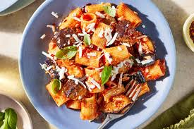

The original Pasta alla Norma is the emblematic dish of Catania, Sicily, named after the opera "Norma" by composer Vincenzo Bellini. The recipe is based on the simplicity and quality of four fundamental ingredients: fried eggplant, tomato, basil, and the indispensable ricotta salata.
Ingredients:
- Pasta: 400g of short pasta (traditionally Maccheroni or Rigatoni).
- Eggplant: 1 or 2 large eggplants, sliced or cubed.
- Tomato Sauce: 500g–800g of ripe tomatoes (or high-quality passata) and 2 cloves of garlic.
- Cheese150g of Ricotta Salata (a dry, salty sheep's milk cheese; do not substitute with fresh ricotta).
- Aromatics:Plenty of fresh basil and extra virgin olive oil for frying.
Steps:
- Preparing the eggplant: Cut the eggplants into slices (approx. 1cm) or cubes. Sprinkle with salt and let them rest in a colander for 30 minutes to remove the bitterness. Rinse and dry well with absorbent paper.
- Frying: Heat a generous amount of olive oil and fry the eggplants until golden and soft. Drain on absorbent paper.Heat a generous amount of olive oil and fry the eggplants until golden and soft. Drain on absorbent paper.
- Making the Sauce: In a saucepan, sauté the whole garlic clove in olive oil (you can remove it later). Add the chopped tomatoes or passata, season with salt and a pinch of sugar (if necessary) and let it simmer for 15-20 minutes. At the end, add hand-torn basil leaves.
- Cooking the pasta: Cook the pasta in well-salted water until al dente.Cook the pasta in well-salted water until al dente.
- Assembly: Mix the pasta with the tomato sauce. Add most of the fried eggplants (save some for the top).Mix the pasta with the tomato sauce. Add most of the fried eggplants (save some for the top).
To serve: Plate the pasta and finish with the remaining eggplant slices, a generous sprinkling of grated ricotta salata, and more fresh basil.
Home